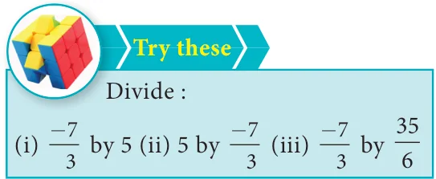
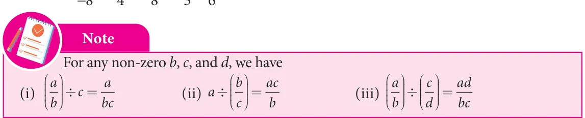

All the rules and principles that govern fractions in the basic operations apply to rational numbers also.
1.3.1 Addition
There can be four different situations while doing addition.
Type 1: Adding numbers that have same denominators
This is simply like adding like fractions and the result is the sum of the numerators divided by their common denominator.
Example 1.10
Add: \(\frac{-6}{11}\), \(\frac{8}{11}\), \(\frac{-12}{11}\)
Solution:
Write the given rational numbers in the standard form and then add them.
So, \(\frac{-6}{11} + \frac{8}{11} + \frac{-12}{11} = \frac{-6+8-12}{11} = \frac{-10}{11}\)
Type 2: Adding numbers that have different denominators
After writing the given rational numbers in the standard form, use the LCM of their denominators to convert the numbers into equivalent rational numbers with a common denominator so that this reduces to Type 1.
Example 1.11
Add: \(\frac{-5}{9}\), \(\frac{-4}{3}\), \(\frac{7}{12}\)
Solution:
LCM of 9, 3, 12 = 36
So, \(\frac{-5}{9} + \frac{-4}{3} + \frac{7}{12} = \frac{-5}{9} \times \frac{4}{4} + \frac{-4}{3} \times \frac{12}{12} + \frac{7}{12} \times \frac{3}{3}\)
\(= \frac{-20}{36} + \frac{-48}{36} + \frac{21}{36} = \frac{-20 - 48 + 21}{36} = \frac{-47}{36}\)
1.3.2 Additive Inverse
The additive inverse of a rational number is another rational number which when added to the given number, gives zero. For example, \(\frac{4}{3}\) and \(\frac{-4}{3}\) are additive inverses of each other, since their sum is zero.

1.3.3 Subtraction
Subtraction is simply adding the additive inverse.
Example 1.12
Subtract: \(\frac{9}{17}\) from \(\frac{-12}{17}\)
Solution:
Now, \(\frac{-12}{17} - \frac{9}{17} = \frac{-12}{17} + \left(\frac{-9}{17}\right) = \frac{-12-9}{17} = \frac{-21}{17}\)
Example 1.13
Subtract: \(\left(-2\frac{6}{11}\right)\) from \(\left(-4\frac{5}{22}\right)\)
Solution:
Now, \(\left(-4\frac{5}{22}\right) - \left(-2\frac{6}{11}\right)\)
\(= \frac{-93}{22} - \left(\frac{-28}{11}\right)\)
\(= \frac{-93}{22} + \frac{28}{11} = \frac{-93 + 28 \times 2}{22} = \frac{-93 + 56}{22} = \frac{-37}{22} = -1\frac{15}{22}\)
1.3.4 Multiplication
Product of two or more rational numbers is found by multiplying the corresponding numerators and denominators of the numbers and then writing them in the standard form.
Example 1.14
Evaluate: (i) \(\frac{-5}{8} \times \frac{7}{3}\) (ii) \(\frac{-6}{-11} \times (-4)\)
Solution:
(i) \(\frac{-5}{8} \times \frac{7}{3} = \frac{-5 \times 7}{8 \times 3} = \frac{-35}{24}\)
(ii) \(\frac{-6}{-11} \times (-4) = \frac{6}{11} \times (-4) = \frac{6 \times (-4)}{11} = \frac{-24}{11}\)

1.3.5 Multiplicative Inverse
If the product of two rational numbers is 1, then each of them is said to be the reciprocal or the multiplicative inverse of the other. For the rational number a, its reciprocal is \(\frac{1}{a}\) and vice versa since \(a \times \frac{1}{a} = 1\). For the rational number \(\frac{a}{b}\), its multiplicative inverse is \(\frac{b}{a}\) and vice versa since \(\frac{a}{b} \times \frac{b}{a} = \frac{a \times b}{b \times a} = 1\).
1.3.6 Division
The idea of reciprocals of fractions is extended to the division of rational numbers also. To divide a given rational number by another rational number, we have to multiply the given rational number by the reciprocal of the second rational number. That is, division is simply multiplying the dividend by the multiplicative inverse of the divisor.

Example 1.15
Divide: \(\frac{7}{-8}\) by \(\frac{-3}{4}\)
Solution:
\(\frac{7}{-8} \div \frac{-3}{4} = \frac{7}{-8} \times \frac{4}{-3} = \frac{7 \times 4}{-8 \times (-3)} = \frac{28}{24} = \frac{7}{6}\)
